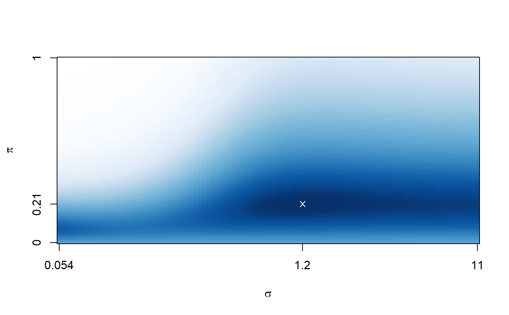
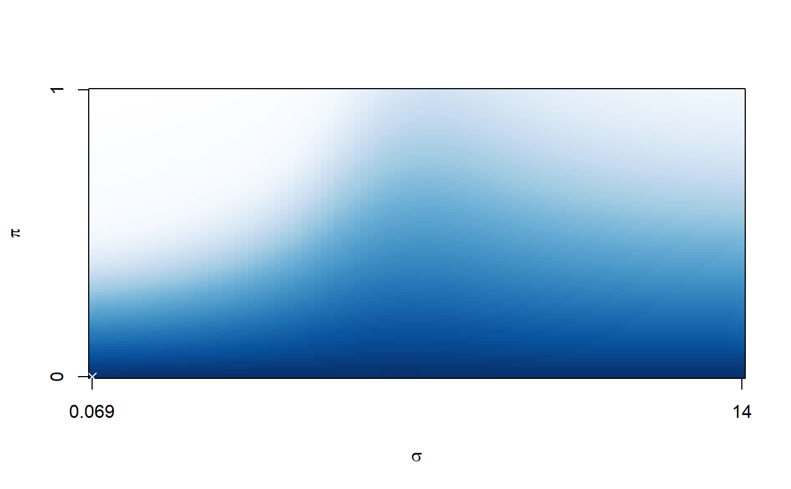
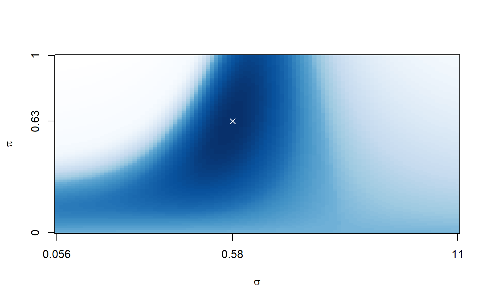
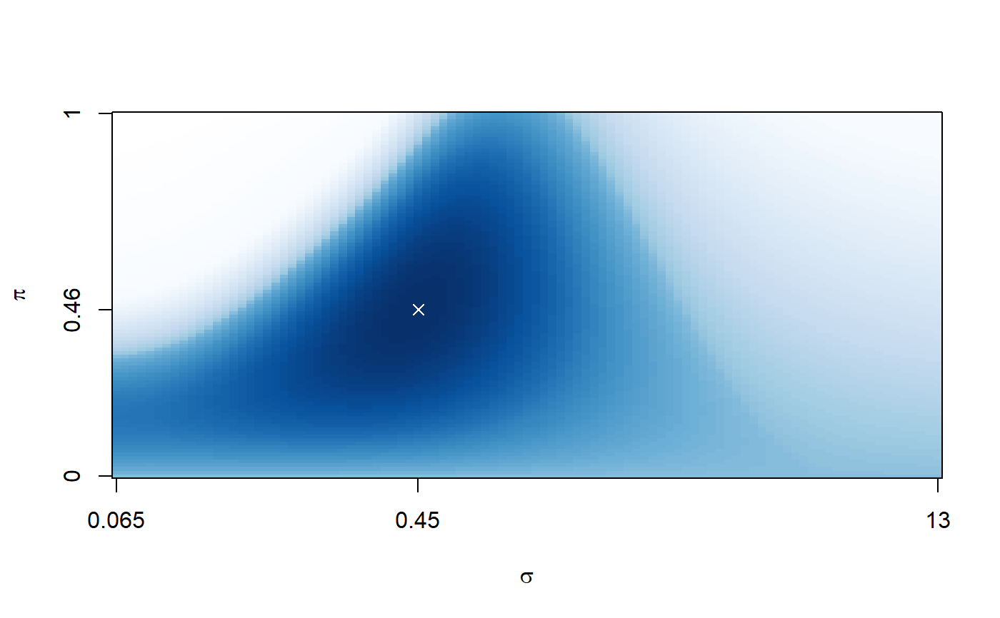
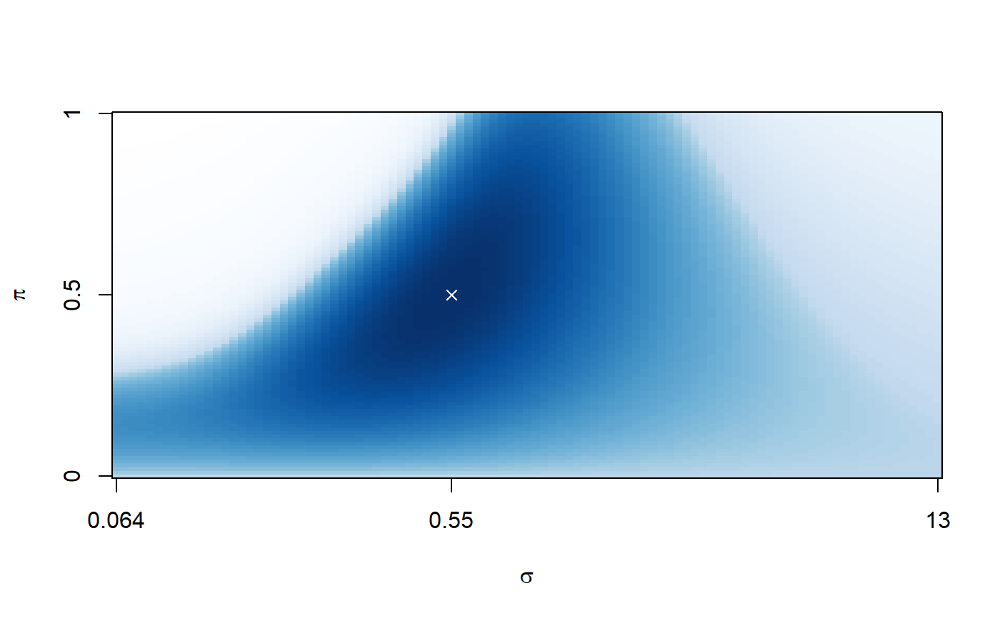

Compares models for a continuous response with a cut-off value.
cv.cornet(y, cutoff, X, alpha = 1, nfolds.ext = 5, nfolds.int = 10, foldid.ext = NULL, foldid.int = NULL, type.measure = "deviance", ...)
| y | continuous outcome: vector of length \(n\) |
|---|---|
| cutoff | cut-off point for dichotomising outcome into classes:
meaningful value between |
| X | features: numeric matrix with \(n\) rows (samples) and \(p\) columns (variables) |
| alpha | elastic net mixing parameter: numeric between \(0\) (ridge) and \(1\) (lasso) |
| nfolds.ext | number of external folds |
| nfolds.int | internal fold identifiers:
vector of length \(n\) with entries
between \(1\) and |
| foldid.ext | external fold identifiers:
vector of length \(n\) with entries
between \(1\) and |
| foldid.int | number of internal folds |
| type.measure | loss function for binary classification:
character |
| ... |
Computes the cross-validated loss of logistic and combined regression.
n <- 100; p <- 200 y <- rnorm(n) X <- matrix(rnorm(n*p),nrow=n,ncol=p) loss <- cornet:::cv.cornet(y=y,cutoff=0,X=X)loss#> $deviance #> intercept binomial combined #> 1.384921 1.422387 1.493403 #> #> $class #> intercept binomial combined #> 0.48 0.50 0.48 #> #> $mse #> intercept binomial combined #> 0.4993132 0.5167176 0.5454346 #> #> $mae #> intercept binomial combined #> 0.9984998 1.0113435 1.0148760 #> #> $auc #> intercept binomial combined #> 0.5000000 0.4675455 0.5053434 #>